Lab 2#
Build#
Lab time: ~45 minutes
Let’s go build out the connectivity for our app!
 Figure: Lab Overview
Figure: Lab Overview
Lab 2.1 - Client / Web Connectivity#
Description#
Test Connectivity to Web App
Validate#
Hint
Use the Search on the left panel as shown in Lab 1, and search for Topology within CoPilot, or go to CoPilot > Topology, and then click the blue azure-web-node_VNET_icon. The VNet should open up and you should see the Aviatrix Gateway.
Click the Aviatrix Gateway icon, then on the right side, click Tools and then click on GAteway Diagnostics

Figure: Gateway Diagnostics
This provides you with the Network Engineer’s toolkit (ICMP-based tools, TCP/UDP connectivity, packet captures) directly from an Aviatrix Gateway
Try to ping:
client-int.podX.aviatrixlab.com
app.podX.aviatrixlab.com
db.podX.aviatrixlab.com
Note
Replace X in the URLs with the pod number assigned to you. You can view the pod number by accessing the ACE Associate Lab Portal
Expected Results#
We have not built any connectivity yet, so none of the connectivity tests should work yet.
Lab 2.2 - Attaching Spokes#
Description#
Attach Spoke VPCs/VNets to their Transits
Validate#
Open the CoPilot
Navigate to Cloud Fabric -> Gateways -> Spoke Gateways and edit the Spoke Gateway azure-web-node
 Figure: Edit the Spoke Gateway
Figure: Edit the Spoke Gateway
Select the Transit Gateway azure-transit from the drop-down window from the “Attach To Transit Gateway” field, and then click on Save.
 Figure: Edit the Spoke Gateway
Figure: Edit the Spoke Gateway
Perform the following actions:
Select azure-web-node and connect it to the azure-transit
Select azure-app-node and connect it to the azure-transit
Select aws-db-node and connect it to the aws-transit-gw
Note
To speed things up, feel free to open multiple browser tabs, and run a Spoke Attachment step in each tab
Hint
You can verify if spokes were correctly attached by viewing notifications. On the top right corner, click on the task icon, you should see success notifications for the actions you performed above. See an example below:

Expected Results#
Each attachment should take between 30-120 seconds. Check CoPilot Topology to see how the network looks after attaching the Gateways.
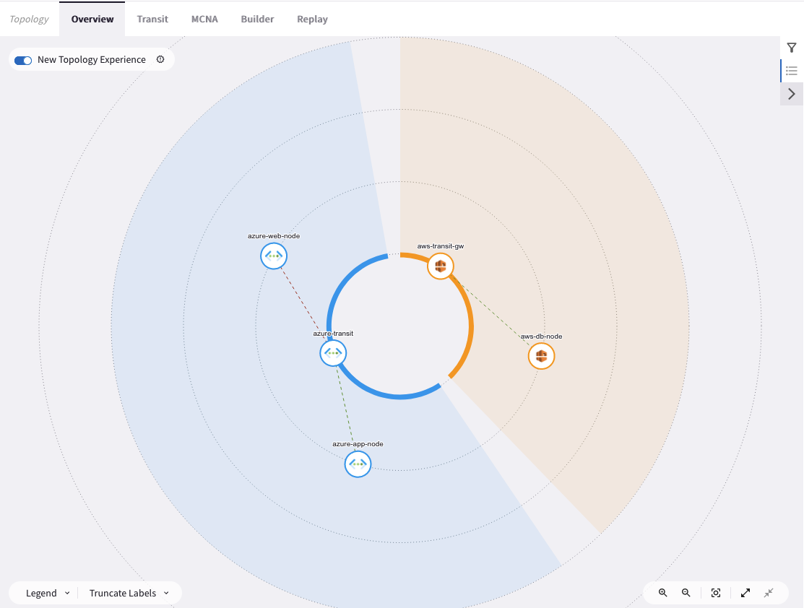
Figure: Topology Spokes Attached
Lab 2.3 - Test the Web App#
Description#
Test the Web App
Validate#
Open the Remote Access Server
Open Firefox from the Desktop on the Remote Access Server
Navigate to http://web.podX.aviatrixlab.com
Note
Replace X in the URL with the pod number assigned to you. You can view the pod number by accessing the ACE Associate Lab Portal
Expected Results#
You should see something similar to this:

Figure: Web App
Lab 2.4 - CoPilot Diagnostics#
Description#
Using CoPilot Topology to Test Connectivity
Validate#
In CoPilot use the search button to navigate to Topology, click the azure-web-node_vnet icon
Click on the Aviatrix Gateway icon and select Tools > Gateway Diagnostics on the right side of the screen
Try to ping/traceroute:
client-int.podX.aviatrixlab.com
app.podX.aviatrixlab.com
db.podX.aviatrixlab.com
Check out the Active Sessions or try a Packet Capture
Important
There is a huge benefit to owning the data path in the cloud! You have complete visibility and have the tools needed to troubleshoot and operate your network!
Expected Results#
You should see something similar to this:
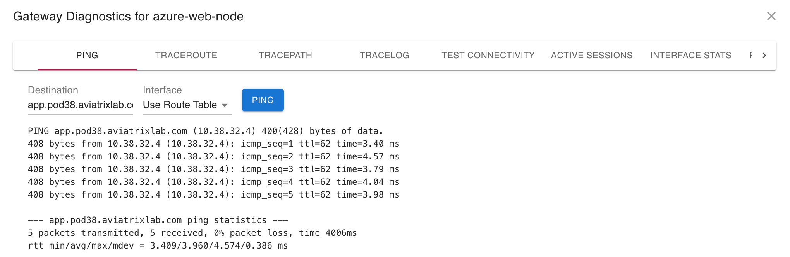
Figure: CoPilot Ping
Note
Since there is no connectivity to AWS, the DB node should not be pingable Find network issues quicker with Topology!
Lab 2.5 - FlowIQ#
Description#
Using CoPilot FlowIQ to debug flows
Validate#
Use the left hand search bar within CoPilot to locate FlowIQ

Figure: CoPilot FlowIQ
Select the Records tab.
Under Filters, click on the + symbol and create the first condition: select Destination Port, equals and then port 8080 (traffic from Web to App).
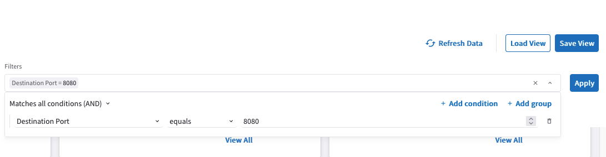 Figure: First Condition
Click Add Condition again, make sure to select OR, select Destination Port is equal to 443 (traffic from App to DB).
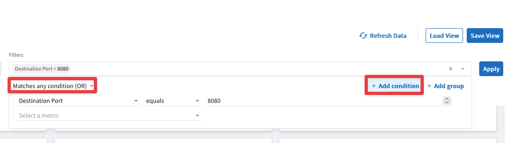 Figure: Add Filter
In the Time Period field, select Last 60 Minutes.
Add the Destination Port parameter among the existing columns.

Figure: Destination Port
Add also the TCP Flag Tags parameter among the existing columns.
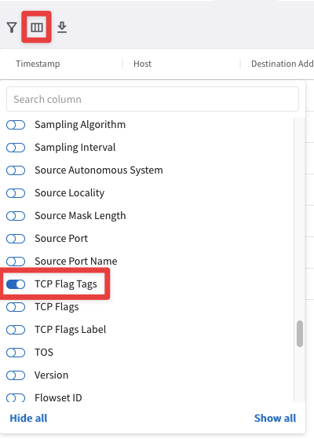
Figure: TCP Flag Tags
Do not forget to click on Apply.
In the Records tab, you can view the raw flow logs. You should see the
App(i.e. 10.x.32.x) trying to connect to theDB(i.e. 10.x.64.x) tier, but we only get a SYN.
Expected Results#
You should see something similar to this showing successful flows from Web to App, but unsuccessful from App to DB:
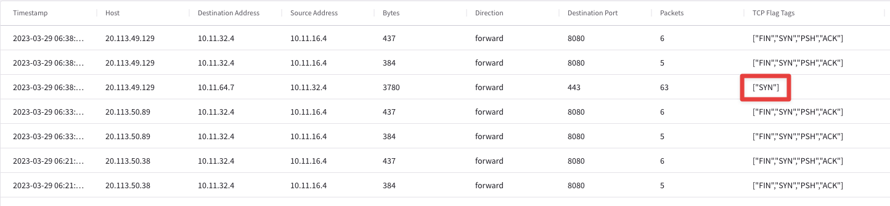
Figure: FlowIQ
Note
No connectivity to the DB tier means that we only see SYNs. Use FlowIQ to get insights into all flows running over your secure cloud network.
Lab 2.6 - CoPilot Topology#
Description#
Using CoPilot Topology to visualize your secure cloud network.
Validate#
Log in to CoPilot
Search for Topology
Expected Results#
You should see something similar to this:
Figure: Topology
Note
Azure Spokes are connected to the Azure Transit
AWS Spoke is connected to the AWS Transit. We do not have connectivity between AWS and Azure. Not yet at least!
Visualizing a network can be so helpful!
Lab 2.7 - Multicloud Peering#
Description#
By this point we should have verified that connectivity in Azure is good, but we are missing the connectivity between Azure and AWS. Aviatrix offers a simple but powerful method for interconnecting clouds.
Validate#
Open the CoPilot
Navigate Cloud Fabric -> Gateways -> Transit Gateways and edit the Transit Gateway aws-transit-gw, clicking on the pencil icon:
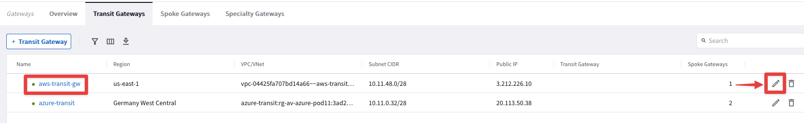 Figure: Edit Transit Gateway
Select the Transit Gateway azure-transit from the drop-down window from the “Peer To Transit Gateways” field, and then click on Save.
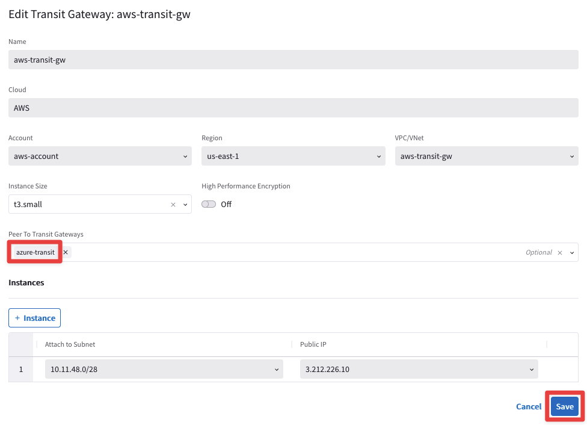 Figure: Establish peering between Transit Gateways
Expected Results#
Verify that the peering has been established
Navigate Cloud Fabric -> Gateways -> Transit Gateways and click on the transit gateway aws-transit-gw
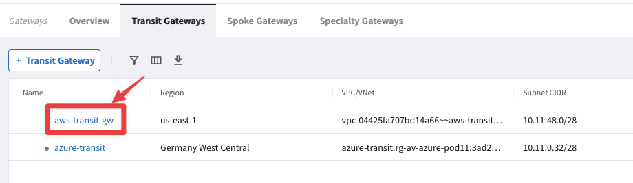
Figure: Select the Transit GW
Then select the tab Connections -> Transit-Transit peering, as depicted below.

Figure: Transit Peering established
Warning
You may need to refresh or wait 60-120 seconds for the connection status to become green (UP).
Check CoPilot Topology to verify the state of the links
Congratulations!!! You have now built a Multicloud Network! Secure cloud networking has never been so easy…
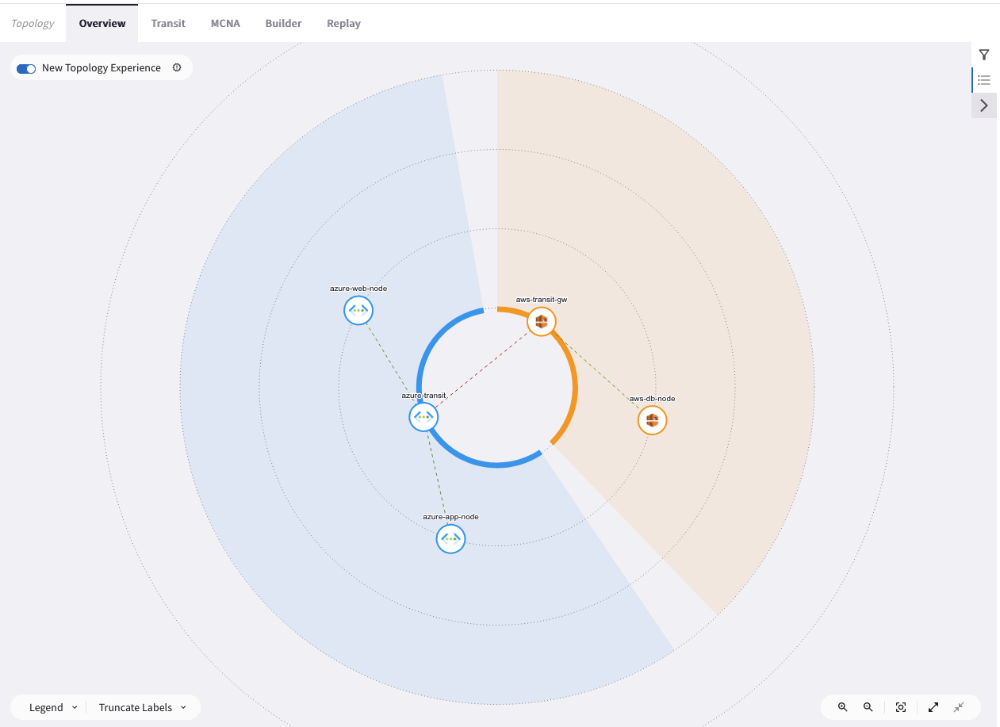
Figure: CoPilot Transit Peering
After this lab, this is how the overall topology would look like:
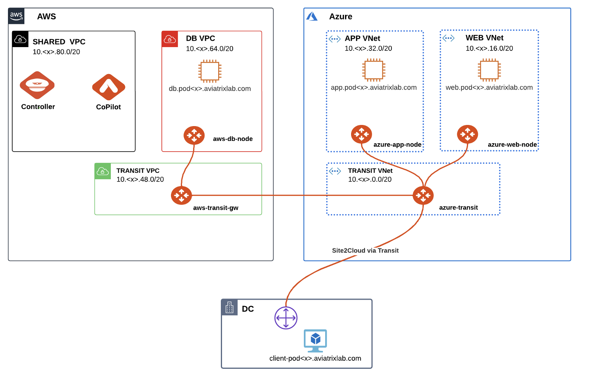
Figure: CoPilot Transit Peering
Lab 2.8 - Test the Web App#
Description#
Check whether the Web App is up and running.
Validate#
Using the RDP session, open Firefox and navigate to:
http://web.podX.aviatrixlab.com
If the site is already open, click the Refresh button
Note
Replace X in the URL with the pod number assigned to you. You can view the pod number by accessing the ACE Associate Lab Portal
Expected Results#
You should see something similar to this, meaning the Database is still not accessible!

Figure: Web App
Lab 2.9 - Debug the Egress Rules#
Description#
The database is actually just a proxy to Amazon DynamoDB. Perhaps the proxy cannot reach DynamoDB.
Validate#
After testing that the connection between Web and App works and seeing that the DB connection fails, login to the CoPilot
Search within Copilot for Egress
Navigate to Egress -> Monitor
Select the VPC aws-db-node

Figure: Egress
Expected Results#
It appears that the Egress filter is not allowing access to: dynamodb.us-west-2.amazonaws.com
You should see somethiing like the following:
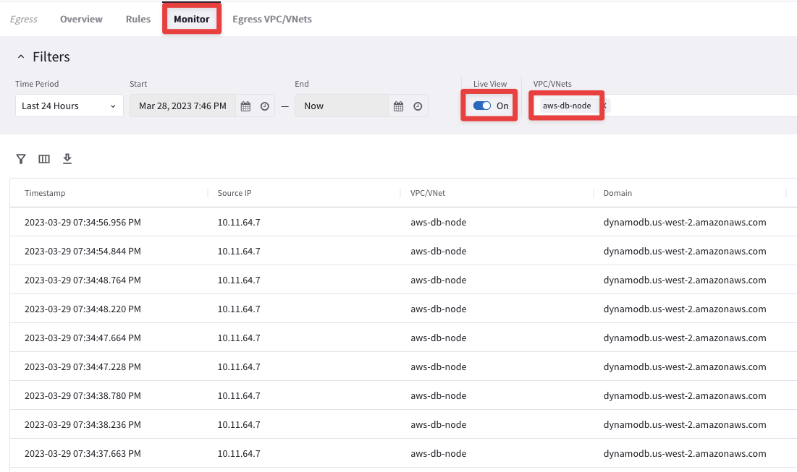
Figure: Egress outcome
Lab 2.10 - Modify the Egress Rules#
Description#
Modify the Egress Rules.
Validate#
Open the Controller, navigate to Security -> Egress Control
Scroll down to Step #3 – Egress FQDN Filter
Click the Edit button next to Default-Egress-Policy 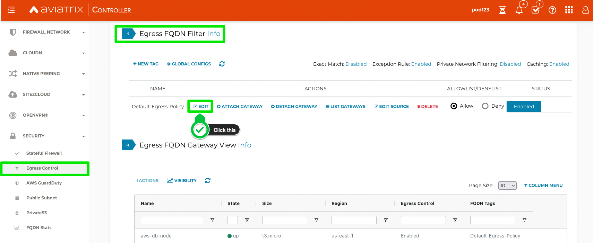 Figure: Edit Egress Rule
Click Add New and enter:
Domain Name:
dynamodb.us-west-2.amazonaws.comProtocol:
tcpPort:
443Action:
AllowClick Save and then Update
 Figure: Add Egress Rule
Figure: Add Egress Rule
Expected Results#
You should have seen Allow entries for *.ubuntu.com and github.com. After adding an entry for dynamodb, your Web App should be working.
Lab 2.11 - Sign-in to the Web App#
Description#
Now that we have built the connectivity, our Web App should be up and running.
Validate#
Log in to the Remote Access Server
Open Firefox on the Desktop and navigate to: http://web.podX.aviatrixlab.com
Note
Replace X in the URL with the pod number assigned to you. You can view the pod number by accessing the ACE Associate Lab Portal
Click Sign In, enter something in the Comments and click Submit to sign-in to the WALL OF FAME
Expected Results#
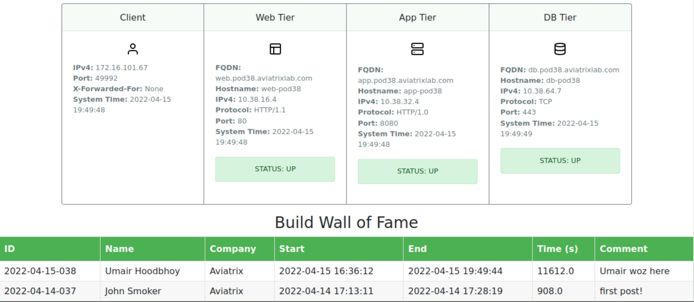
Figure: DB Tier Working
Note
You should see that all 3 App Tiers are now up and can talk to each other. You should also be able to register yourself in the form, and also be able to view the Wall of Fame!
Nice work!